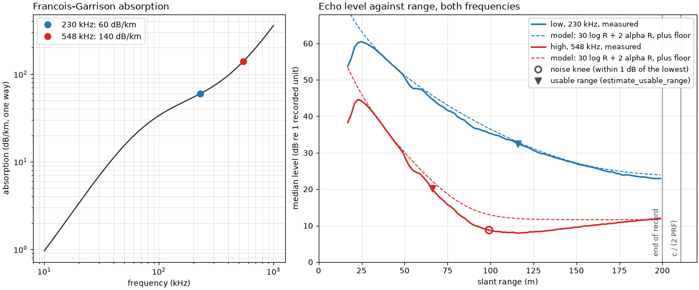
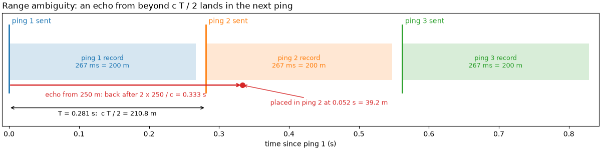
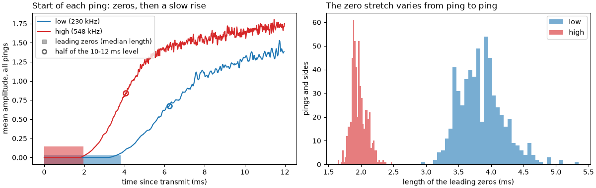
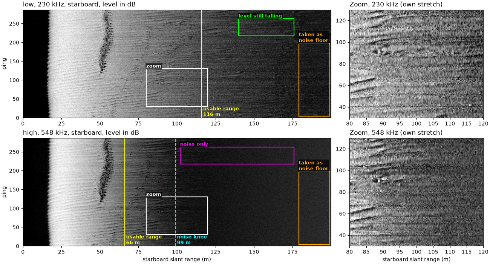

Note
Go to the end to download the full example code.
How far a sidescan sees#

The echo from the seabed gets weaker the farther it travels. The sound spreads out on its way to the seabed and back, and seawater absorbs part of it, more the higher the frequency. The usable range ends where the echo sinks into the noise floor: the level the receiver records with no seabed echo at all, from its own electronics, the sea and the towing platform.
For a flat seabed the recorded echo level falls with slant range R
roughly as
where L_0 collects the source level, the receiver’s gain and the
seabed’s backscatter strength, and alpha is the absorption
coefficient in dB per meter, counted twice for the way out and back.
The 30 is two-way spherical spreading (40 log R) less the 10 log R by
which the patch of seabed lit by the pulse grows with range (Tamsett,
2017, doi:10.3390/jmse5040054). Absorption rises steeply with frequency
(Francois and Garrison, 1982, J. Acoust. Soc. Am. 72(3) 896-907 and
72(6) 1879-1890), so a high frequency gives finer detail but a shorter
range.
Timing limits range too. The sonar pings every T seconds, a pulse
repetition frequency PRF = 1 / T. Echoes have to arrive before the
next ping goes out, so the longest range the recorder can place without
doubt is
An echo from farther out arrives after the next ping and is drawn in that ping at the wrong range (range ambiguity). At the near end, the receiver is blanked or still ringing while the pulse goes out, so the first samples of a ping hold zeros or the transmit pulse itself.
This page measures all three limits on one public line recorded at two frequencies at once.
Data: JNCC Wight-Barfleur Reef, EdgeTech JSF, Open Government Licence v3.0 (see Example data).
Usage: python examples/theory/plot_range_limits.py [output_dir]
# 2026 rshomberg@uri.edu
import sys
from pathlib import Path
import matplotlib.pyplot as plt
import numpy as np
from matplotlib.patches import Rectangle
from sidescanpy import analysis, datasets
from sidescanpy.io import read_and_convert
from sidescanpy.log import configure_logging
from sidescanpy.processing import altitude_from_bottom_track, compute_geometric_ranges
from sidescanpy.processing.radiometric import (
center_frequency_hz,
francois_garrison_absorption_db_per_m,
)
out = Path(sys.argv[1]) if len(sys.argv) > 1 else Path(".")
out.mkdir(parents=True, exist_ok=True)
# The JSF file records no sound velocity; ranges use 1500 m/s, the value
# the recorder wrote into its XTF copy of the same pings.
configure_logging("ERROR")
C = 1500.0
The line, both frequencies#
The sonar recorded a low and a high frequency on every ping. Each is a
frequency sweep (chirp); center_frequency_hz()
gives its center. The low one sweeps 218.74 to 241.74 kHz, center
230 kHz (sidescanpy key hz_218740, the start of the sweep); the
high one 521 to 574 kHz, center 548 kHz (hz_521000). Titles and
labels below use the center frequencies. The first ping is incomplete
and is dropped. The altitude comes from the first seabed echo
(bottom_track).
survey = read_and_convert([datasets.fetch("jncc_wight_barfleur_20130321174522.jsf")], fmt="jsf")
lines = {}
for key, name in zip(survey.frequencies, ("low", "high")):
ds = survey.get_frequency(key).dataset.load()
ds = ds.isel(ping=np.isfinite(ds["backscatter_intensity"].values).all(axis=(1, 2)))
ds = compute_geometric_ranges(altitude_from_bottom_track(ds))
lines[name] = ds
fs = ds.attrs["sample_rate_hz"]
print(f"{name}: {key}, sweep {ds.attrs['freq_hz_start'] / 1e3:.2f}-{ds.attrs['freq_hz_end'] / 1e3:.2f} kHz, "
f"center {center_frequency_hz(ds) / 1e3:.2f} kHz; {ds.sizes['ping']} pings, {ds.sizes['sample']} samples "
f"at {fs:.0f} Hz = {C * ds.sizes['sample'] / fs / 2:.1f} m recorded")
low: hz_218740, sweep 218.74-241.74 kHz, center 230.24 kHz; 287 pings, 11568 samples at 43403 Hz = 199.9 m recorded
high: hz_521000, sweep 521.00-574.00 kHz, center 547.50 kHz; 287 pings, 23140 samples at 86806 Hz = 199.9 m recorded
Timing: the ping interval#
The time between pings from the ping time stamps, and the longest range it allows.
seconds = (lines["high"]["time"].values - lines["high"]["time"].values[0]) / np.timedelta64(1, "s")
interval = np.diff(seconds)
T = float(np.median(interval))
r_max = C * T / 2
recorded = C * lines["high"].sizes["sample"] / lines["high"].attrs["sample_rate_hz"] / 2
print(f"ping interval: median {T:.3f} s (from {interval.min():.3f} to {interval.max():.3f} s), PRF {1 / T:.2f} Hz")
print(f"R_max = c / (2 PRF) = {C:.0f} x {T:.3f} / 2 = {r_max:.1f} m; recorded range {recorded:.1f} m "
f"({recorded / r_max:.0%} of it)")
print(f"an echo from 250 m would arrive {2 * 250 / C - T:.3f} s after the next ping, drawn at "
f"{250 - r_max:.1f} m in it")
ping interval: median 0.281 s (from 0.279 to 0.283 s), PRF 3.56 Hz
R_max = c / (2 PRF) = 1500 x 0.281 / 2 = 210.8 m; recorded range 199.9 m (95% of it)
an echo from 250 m would arrive 0.052 s after the next ping, drawn at 39.2 m in it
The figure draws three pings on a time line. Each records for
2 x 199.9 / c seconds and the next goes out T later. An echo
from 250 m (red) leaves with ping 1 and comes back during ping 2’s
record, where the recorder can only place it at the time since ping 2.
t_rec = 2 * recorded / C
fig, ax = plt.subplots(figsize=(12, 3.0), constrained_layout=True)
for k in range(3):
ax.add_patch(Rectangle((k * T, 0.2), t_rec, 0.6, color=f"C{k}", alpha=0.18, lw=0))
ax.plot([k * T, k * T], [0, 1.1], color=f"C{k}", lw=2)
ax.text(k * T + 0.004, 1.13, f"ping {k + 1} sent", color=f"C{k}", fontsize=10)
ax.text(k * T + t_rec / 2, 0.5, f"ping {k + 1} record\n{1000 * t_rec:.0f} ms = {recorded:.0f} m",
ha="center", va="center", fontsize=9, color=f"C{k}")
t_echo = 2 * 250 / C
ax.annotate("", (t_echo, 0.12), (0, 0.12), arrowprops=dict(arrowstyle="->", color="C3", lw=1.8))
ax.text(t_echo / 2, 0.02, f"echo from 250 m: back after 2 x 250 / c = {t_echo:.3f} s", color="C3", ha="center",
va="top", fontsize=9)
ax.plot(t_echo, 0.12, "o", color="C3", ms=7)
ax.annotate(f"placed in ping 2 at {t_echo - T:.3f} s = {250 - r_max:.1f} m", (t_echo, 0.12), (t_echo + 0.04, -0.2),
color="C3", fontsize=9, arrowprops=dict(arrowstyle="->", color="C3"))
ax.annotate("", (T, -0.25), (0, -0.25), arrowprops=dict(arrowstyle="<->", color="k"))
ax.text(T / 2, -0.3, f"T = {T:.3f} s: c T / 2 = {r_max:.1f} m", ha="center", va="top", fontsize=9)
ax.set_xlim(-0.01, 3 * T)
ax.set_ylim(-0.55, 1.3)
ax.set_yticks([])
ax.set_xlabel("time since ping 1 (s)")
ax.set_title("Range ambiguity: an echo from beyond c T / 2 lands in the next ping", loc="left")
fig.savefig(out / "range_limits_timing.png", dpi=150)

The near end: the first samples#
What each ping holds before the water column: count the samples that are exactly zero at the start of each ping, and average the first 12 ms over all pings and both sides to look for a transmit pulse.
WINDOW_S = 0.012
fig, (ax_mean, ax_hist) = plt.subplots(1, 2, figsize=(12, 3.8), constrained_layout=True)
for name, colour in (("low", "C0"), ("high", "C3")):
ds = lines[name]
fs = ds.attrs["sample_rate_hz"]
amp = ds["backscatter_intensity"].values
lead = np.argmax(amp > 0, axis=2) # leading zeros per ping and side
n = int(WINDOW_S * fs)
mean_start = amp[:, :, :n].mean(axis=(0, 1))
t_ms = 1000 * np.arange(n) / fs
settled = mean_start[t_ms >= 10.0].mean()
half = t_ms[np.argmax(mean_start >= settled / 2)]
print(f"{name}: leading zeros {np.median(lead):.0f} samples (median; {lead.min()} to {lead.max()}) = "
f"{1000 * np.median(lead) / fs:.2f} ms = {C * np.median(lead) / fs / 2:.2f} m of range")
print(f" mean level 10-12 ms after transmit {settled:.2f}; the mean reaches half of that at {half:.1f} ms; "
f"largest mean in the first 12 ms {mean_start.max():.2f}")
ax_mean.plot(t_ms, mean_start, color=colour, label=f"{name} ({center_frequency_hz(ds) / 1e3:.0f} kHz)")
ax_mean.axvspan(0, 1000 * np.median(lead) / fs, ymin=0, ymax=0.06 if name == "low" else 0.12, color=colour,
alpha=0.5, lw=0)
ax_mean.plot(half, settled / 2, "o", color=colour, ms=7, mfc="none", mew=2)
ax_hist.hist(1000 * lead.ravel() / fs, bins=40, color=colour, alpha=0.6, label=name)
ax_mean.set_xlabel("time since transmit (ms)")
ax_mean.set_ylabel("mean amplitude, all pings")
ax_mean.set_title("Start of each ping: zeros, then a slow rise", loc="left")
ax_mean.plot([], [], "s", color="0.4", alpha=0.5, label="leading zeros (median length)")
ax_mean.plot([], [], "o", color="0.4", mfc="none", mew=2, label="half of the 10-12 ms level")
ax_mean.legend(loc="upper left", fontsize=9)
ax_hist.set_xlabel("length of the leading zeros (ms)")
ax_hist.set_ylabel("pings and sides")
ax_hist.set_title("The zero stretch varies from ping to ping", loc="left")
ax_hist.legend()
fig.savefig(out / "range_limits_first_samples.png", dpi=150)

low: leading zeros 166 samples (median; 127 to 232) = 3.82 ms = 2.87 m of range
mean level 10-12 ms after transmit 1.35; the mean reaches half of that at 6.2 ms; largest mean in the first 12 ms 1.53
high: leading zeros 169 samples (median; 143 to 215) = 1.95 ms = 1.46 m of range
mean level 10-12 ms after transmit 1.69; the mean reaches half of that at 4.1 ms; largest mean in the first 12 ms 1.80
The far end: where the echo meets the noise#
estimate_usable_range() bins all samples
beyond the first seabed echo by slant range (2 m bins, both sides),
takes the median of the farthest tenth of the bins as the noise floor
and reports the last bin still 3 noise standard deviations above it.
The same binned medians, in dB, show the knee directly: the range
where the level stops falling, taken here as the first bin within
1 dB of the lowest bin.
profiles = {}
for name in ("low", "high"):
ds = lines[name]
first = analysis.analyze_nadir(ds).first_bottom_return_sample
usable = analysis.estimate_usable_range(ds, exclude_before_sample=first)
binned = usable.binned
centre = 0.5 * (binned["range_min_m"].values + binned["range_max_m"].values)
level = 20 * np.log10(binned["median"].values)
lowest = int(np.argmin(level))
# No knee inside the record if the lowest bin is in the last tenth.
knee = float(centre[np.argmax(level <= level[lowest] + 1.0)]) if lowest < 0.9 * len(level) else None
profiles[name] = dict(range=centre, level=level, usable=usable.usable_range_m, knee=knee,
noise=20 * np.log10(usable.noise_floor), alpha=francois_garrison_absorption_db_per_m(
center_frequency_hz(ds)), freq=center_frequency_hz(ds))
threshold = usable.noise_floor + usable.snr_threshold * usable.noise_std
print(f"{name}: usable range (estimate_usable_range) {usable.usable_range_m:.0f} m; noise floor "
f"{usable.noise_floor:.2f} ({20 * np.log10(usable.noise_floor):.1f} dB re 1), noise std {usable.noise_std:.2f}; "
f"a bin counts as signal above {usable.noise_floor:.2f} + {usable.snr_threshold:.0f} x {usable.noise_std:.2f} = "
f"{threshold:.2f} ({20 * np.log10(threshold):.1f} dB re 1)")
knee_text = f"within 1 dB of it from {knee:.0f} m" if knee else "still falling at the end of the record: no knee"
print(f" lowest binned level {level[lowest]:.1f} dB at {centre[lowest]:.0f} m; {knee_text}; "
f"level at the end of the record {level[-1]:.1f} dB")
low: usable range (estimate_usable_range) 116 m; noise floor 14.50 (23.2 dB re 1), noise std 9.44; a bin counts as signal above 14.50 + 3 x 9.44 = 42.81 (32.6 dB re 1)
lowest binned level 22.9 dB at 195 m; still falling at the end of the record: no knee; level at the end of the record 22.9 dB
high: usable range (estimate_usable_range) 66 m; noise floor 3.81 (11.6 dB re 1), noise std 2.19; a bin counts as signal above 3.81 + 3 x 2.19 = 10.39 (20.3 dB re 1)
lowest binned level 8.0 dB at 115 m; within 1 dB of it from 99 m; level at the end of the record 12.0 dB
The figure shows both frequencies on the starboard side, the same
pings, with each frequency’s usable range (solid line) and noise knee
(dashed line, high frequency only) and the farthest tenth of the
record that estimate_usable_range() takes
as the noise floor (boxed). The zooms on the right show 80 to 120 m
at each frequency, each on its own grey stretch: at the high frequency
the ripples end near 90 m and leave even speckle; the low frequency
still shows changes of level along range and from ping to ping.
def starboard_db(ds, cell_m=0.1):
"""Starboard level in dB, averaged over ``cell_m`` of range, and the range of each cell."""
fs = ds.attrs["sample_rate_hz"]
n = max(1, int(round(cell_m / (C / (2 * fs)))))
amp = ds["backscatter_intensity"].values[:, 1].astype(np.float64)
keep = (amp.shape[1] // n) * n
db = 20 * np.log10(amp[:, :keep].reshape(amp.shape[0], -1, n).mean(axis=2) + 1e-3)
return db, (np.arange(db.shape[1]) + 0.5) * n * C / (2 * fs)
def label_box(ax, x0, x1, y0, y1, text, colour="cyan", where="above", fontsize=9):
"""Outline a feature with a rectangle and name it."""
ax.add_patch(Rectangle((x0, y0), x1 - x0, y1 - y0, fill=False, ec=colour, lw=1.6))
y = y1 if where == "above" else y0
ax.text(x0, y, text, color=colour, fontsize=fontsize, fontweight="bold",
va="bottom" if where == "above" else "top", ha="left",
bbox=dict(boxstyle="square,pad=0.15", fc="black", ec="none", alpha=0.7))
ZOOM = (80.0, 120.0, 30, 130)
fig, axes = plt.subplots(2, 2, figsize=(13, 7), width_ratios=[2.3, 1], constrained_layout=True)
for row, name in enumerate(("low", "high")):
ds, p = lines[name], profiles[name]
db, rng_m = starboard_db(ds)
lo, hi = np.percentile(db[:, rng_m > 20], [2, 99.5])
n_p = db.shape[0]
ax, ax_z = axes[row]
ax.imshow(db, cmap="gray", vmin=lo, vmax=hi, origin="lower", aspect="auto", extent=[0, rng_m[-1], 0, n_p])
ax.axvline(p["usable"], color="yellow", lw=1.5)
ax.text(p["usable"] + 1, 5, f"usable range\n{p['usable']:.0f} m", color="yellow", fontsize=9, fontweight="bold")
if p["knee"]:
ax.axvline(p["knee"], color="cyan", lw=1.5, ls="--")
ax.text(p["knee"] + 1, 5, f"noise knee\n{p['knee']:.0f} m", color="cyan", fontsize=9, fontweight="bold")
label_box(ax, p["knee"] + 3, 176, n_p - 70, n_p - 24, "noise only", colour="magenta")
else:
label_box(ax, 140, 176, n_p - 70, n_p - 24, "level still falling", colour="lime")
tenth = 0.9 * p["range"][-1]
label_box(ax, tenth, rng_m[-1] - 0.5, 4, n_p - 90, "taken as\nnoise floor", colour="orange")
label_box(ax, ZOOM[0], ZOOM[1], ZOOM[2], ZOOM[3], "zoom", colour="w")
ax.set_xlim(0, rng_m[-1])
ax.set_ylabel("ping")
ax.set_title(f"{name}, {p['freq'] / 1e3:.0f} kHz, starboard, level in dB", loc="left")
in_zoom = (rng_m >= ZOOM[0]) & (rng_m <= ZOOM[1])
zoom = db[ZOOM[2]:ZOOM[3], in_zoom]
ax_z.imshow(zoom, cmap="gray", vmin=np.percentile(zoom, 1), vmax=np.percentile(zoom, 99.5), origin="lower",
aspect="auto", extent=[ZOOM[0], ZOOM[1], ZOOM[2], ZOOM[3]])
ax_z.set_title(f"Zoom, {p['freq'] / 1e3:.0f} kHz (own stretch)", loc="left")
axes[1, 0].set_xlabel("starboard slant range (m)")
axes[1, 1].set_xlabel("starboard slant range (m)")
fig.savefig(out / "range_limits_far_end.png", dpi=150)

Absorption against frequency#
francois_garrison_absorption_db_per_m()
with its default water (10 C, salinity 35, 10 m depth, pH 8; the file
records no temperature or salinity). At the two center frequencies:
low (230 kHz): alpha = 59.8 dB/km; two-way over 100 m: 2 x 0.0598 x 100 = 12.0 dB
high (548 kHz): alpha = 140.2 dB/km; two-way over 100 m: 2 x 0.1402 x 100 = 28.0 dB
The loss model against the data#
Anchor L(R) = L0 - 30 log10 R - 2 alpha R on the measured level at
40 m, then add the measured noise floor (as power), and compare with
the binned medians farther out.
R0 = 40.0
for name in ("low", "high"):
p = profiles[name]
l0 = np.interp(R0, p["range"], p["level"])
echo = l0 - 30 * np.log10(p["range"] / R0) - 2 * p["alpha"] * (p["range"] - R0)
p["model"] = 10 * np.log10(10 ** (echo / 10) + 10 ** (p["noise"] / 10))
p["echo"] = echo
at = 90.0
print(f"{name}: from {R0:.0f} to {at:.0f} m the model falls 30 log10({at / R0:.2f}) + 2 x {p['alpha']:.4f} x "
f"{at - R0:.0f} = {30 * np.log10(at / R0) + 2 * p['alpha'] * (at - R0):.1f} dB; the data fall "
f"{l0 - np.interp(at, p['range'], p['level']):.1f} dB")
echo_250 = l0 - 30 * np.log10(250 / R0) - 2 * p["alpha"] * (250 - R0)
print(f" an echo from 250 m: model level {echo_250:.1f} dB re 1, against a noise floor of {p['noise']:.1f} dB")
low: from 40 to 90 m the model falls 30 log10(2.25) + 2 x 0.0598 x 50 = 16.5 dB; the data fall 18.4 dB
an echo from 250 m: model level 6.4 dB re 1, against a noise floor of 23.2 dB
high: from 40 to 90 m the model falls 30 log10(2.25) + 2 x 0.1402 x 50 = 24.6 dB; the data fall 25.5 dB
an echo from 250 m: model level -47.0 dB re 1, against a noise floor of 11.6 dB
Absorption, levels and limits together#
Left: absorption against frequency, with the two frequencies of this
line. Right: the binned median level against slant range for both
(solid), the spreading-plus-absorption model with the noise floor
(dashed), the noise knee (circle), the usable range from
estimate_usable_range() (triangle), and the
end of the record and c / (2 PRF) (grey lines).
freqs = np.logspace(4, 6, 200)
fig, (ax_a, ax_l) = plt.subplots(1, 2, figsize=(12.5, 5.2), width_ratios=[1, 1.5], constrained_layout=True)
ax_a.loglog(freqs / 1e3, 1000 * francois_garrison_absorption_db_per_m(freqs), color="0.2")
for name, colour in (("low", "C0"), ("high", "C3")):
p = profiles[name]
ax_a.plot(p["freq"] / 1e3, 1000 * p["alpha"], "o", color=colour, ms=8,
label=f"{p['freq'] / 1e3:.0f} kHz: {1000 * p['alpha']:.0f} dB/km")
ax_l.plot(p["range"], p["level"], color=colour, lw=2, label=f"{name}, {p['freq'] / 1e3:.0f} kHz, measured")
ax_l.plot(p["range"], p["model"], "--", color=colour, lw=1.2, label="model: 30 log R + 2 alpha R, plus floor")
if p["knee"]:
ax_l.plot(p["knee"], np.interp(p["knee"], p["range"], p["level"]), "o", color=colour, ms=9, mfc="none", mew=2)
ax_l.plot(p["usable"], np.interp(p["usable"], p["range"], p["level"]), "v", color=colour, ms=9)
ax_a.set_xlabel("frequency (kHz)")
ax_a.set_ylabel("absorption (dB/km, one way)")
ax_a.set_title("Francois-Garrison absorption", loc="left")
ax_a.grid(alpha=0.3, which="both")
ax_a.legend(loc="upper left")
for x, label in ((recorded, "end of record"), (r_max, "c / (2 PRF)")):
ax_l.axvline(x, color="0.5", lw=1)
ax_l.text(x - 1.5, 1.5, label, rotation=90, ha="right", va="bottom", fontsize=9, color="0.3")
ax_l.set_xlabel("slant range (m)")
ax_l.set_ylabel("median level (dB re 1 recorded unit)")
ax_l.plot([], [], "o", color="0.3", ms=8, mfc="none", mew=2, label="noise knee (within 1 dB of the lowest)")
ax_l.plot([], [], "v", color="0.3", ms=8, label="usable range (estimate_usable_range)")
ax_l.set_title("Echo level against range, both frequencies", loc="left")
ax_l.set_xlim(0, 220)
ax_l.set_ylim(0, 68)
ax_l.grid(alpha=0.3)
ax_l.legend(loc="upper right", fontsize=9, framealpha=0.95)
fig.savefig(out / "range_limits.png", dpi=150)
Reading the result#
Absorption sets the range at the high frequency. Francois and Garrison give 59.8 dB/km at 230 kHz and 140.2 dB/km at 548 kHz in the default water, so over 100 m of slant range the round trip loses 12.0 dB to absorption at the low frequency and 28.0 dB at the high one. With 30 log R spreading added, the model predicts a fall of 16.5 dB (low) and 24.6 dB (high) from 40 to 90 m; the measured medians fall 18.4 and 25.5 dB. The seabed is not uniform, the water is not exactly the default and the recorder may add gain of its own, so this is a check of the shape, not a fit.
The noise knee and the usable range differ. At the high
frequency the median level stops falling at about 99 m (within 1 dB of
its lowest, 8.0 dB re 1 at 115 m).
estimate_usable_range() is more cautious
and gives 66 m: it takes the farthest tenth of the record as the
noise floor (3.81, 11.6 dB re 1) and asks for a median 3 noise standard
deviations above it, 10.39 units or 20.3 dB re 1. Noise in sidescan
is speckled, its standard deviation (2.19) a large share of its level,
so that test asks for about 9 dB of signal over the floor. Beyond
115 m the high-frequency floor rises again, to 12.0 dB at the end of
the record; something in the recorder or the water adds level with
time, which the file does not explain. Both numbers are useful: 66 m
is where the seabed is clearly above the noise, 99 m is where any
seabed signal is gone.
The low frequency runs out of record, not of signal. Its median is
still falling at the end of the record (22.9 dB re 1 at 195 m, the
lowest bin), so no knee lies inside it. The usable range of 116 m
from estimate_usable_range() is then too
short for a different reason: the “noise floor” it takes from the last
tenth of the record (14.50, 23.2 dB re 1) is still partly seabed echo.
Timing. The sonar pinged every 0.281 s (PRF 3.56 Hz), which allows
c / (2 PRF) = 1500 x 0.281 / 2 = 210.8 m. The recorder kept
199.9 m of each ping, 95 % of that. An echo from 250 m would arrive
0.052 s into the next ping and be drawn there at 39.2 m. The model
puts such an echo at 6.4 dB re 1 at the low frequency and -47.0 dB at
the high one, both below the measured floors (23.2 and 11.6 dB), so
range ambiguity is not expected on this line; with a slower ping rate
or a lower frequency it can be.
The near end holds zeros, not a transmit pulse. Each ping starts with a run of exact zeros: a median 166 samples at the low frequency and 169 at the high one, about the same number of samples, so twice as long in time at the low frequency, which samples half as fast (3.82 and 1.95 ms). The run varies from ping to ping (127 to 232 and 143 to 215 samples). After it the mean level rises smoothly, reaching half of its level 10 to 12 ms after transmit at 6.2 ms (low) and 4.1 ms (high), with no spike from the outgoing pulse. Whether that is the receiver’s blanking ending, a gain ramp, or both, the file does not say. The seabed echo arrives far later, so on this line the near-end limit does not cost any seabed.
In sidescanpy: estimate_usable_range()
measures the usable range;
slice_by_range() cuts the record at it,
and apply_tvg() compensates spreading
and absorption (with
francois_garrison_absorption_db_per_m()
for alpha) up to the point where only noise is left to amplify.
Echo amplitude and decibels explains the dB levels used here and
How sidescan sees the geometry.
Total running time of the script: (0 minutes 10.055 seconds)